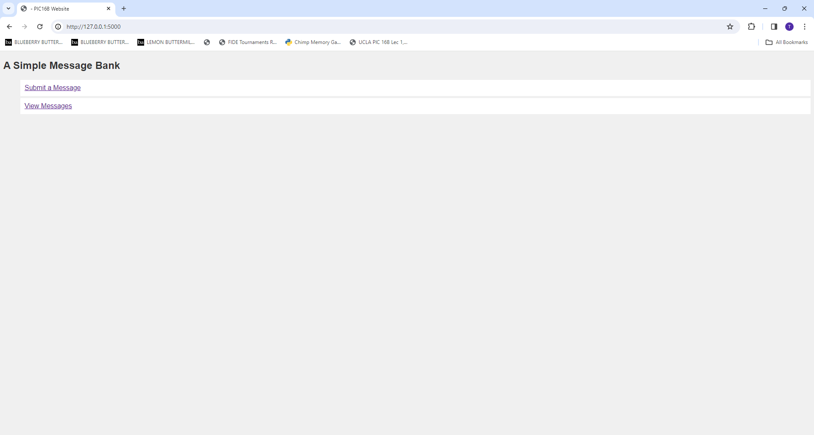
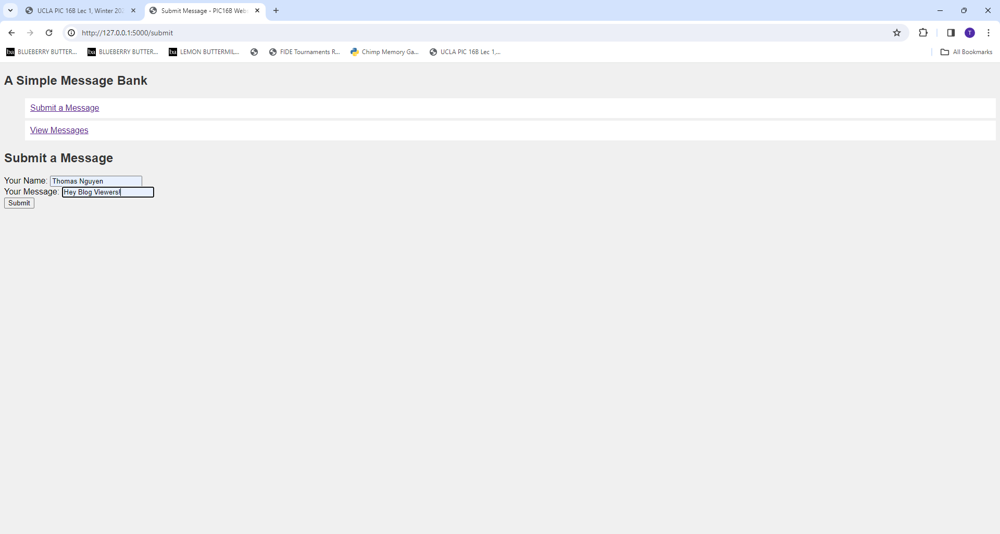
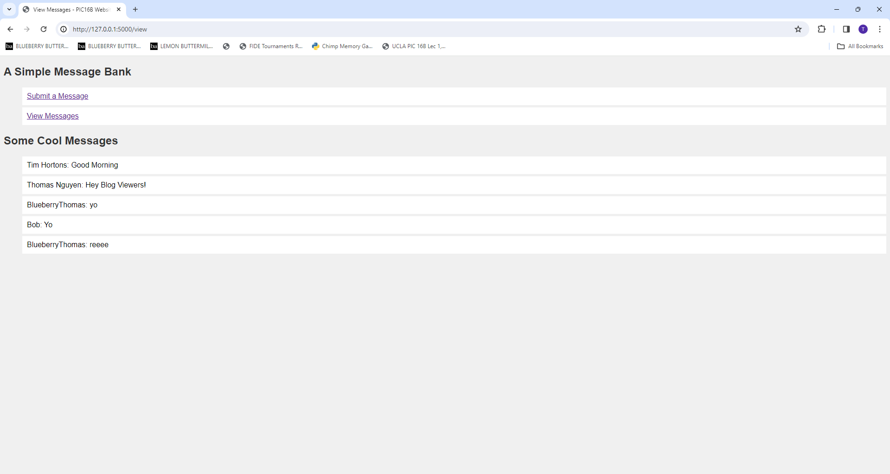

In this blog post, we will learn how to create simple webapp via Flask, a web framework that provides useful tools and features that make creating web applications in Python a lot easier. For our example, we will creating a message bank which allows a user to either submit a message or view previous message entries.
Setting up Flask
The first thing we need to do is setup flask. So, we will go to our virtual environment and then install flask. For Windows, the two line of code will be: conda activate {environment name} and pip install flask. Then to help with our website creation, we want to set our Flask environment to “development” through export FLASK_ENV=development which enables debug mode and gives more specific error messages.
Now, we can start with the code files. First, in order to tell the Flask where our application is, we will create a python file called app.py. In this file we will need to import the flask python library as well as some of its tools. First, we need Flask class to run the application. We are also using render_template() function in order to generate output from a template file based on the Jinja2 engine that is found in the application’s templates folder. Next, we import request which creates a Request object that allows you to access the data passed into your Flask application. Lastly, we need g which acts as a namespace object to store common data during a request.
from flask import Flask, render_template, request, gNext, we want to create a Flask application object and set up the Flask application to know where to look for templates and static files based on the location of the current Python module. We can do that with the code below:
app = Flask(__name__)Lastly, in order to run the the Flask application we want to use the line below:
if __name__ == '__main__':
app.run(debug=True)By saying if_name_ == '__main__', we are ensuring that the application only starts/runs when the script is executed directly and not when imported as a module in another script. This line will be the last in the python file
Creating Website Functions
Next up, depending on the goals of your website, we want to create some functions that we will call later when specifying the purpose of each website. For our purposes, because we want to have a website to submit and view messages, we will create three different functions.
For the first function, we want to create a function that should handle creating the database of messages (thus, we should also import sqlite3). This function should be able to 1) check whether there is a database in the g attribute of the app and connect to the database if there isn’t. Thus, our code should look something like this:
def get_message_db():
try:
return g.message_db # Returning message database from attribute g
except AttributeError:
g.message_db = sqlite3.connect("messages_db.sqlite") # Creating connection to database file
cursor = g.message_db.cursor() # Creating cursor object to execute SQL
cursor.execute('''CREATE TABLE IF NOT EXISTS messages (
id INTEGER PRIMARY KEY,
handle TEXT,
message TEXT)''') # Creatng message table if it doesn't exist yet
g.message_db.commit() # Commiting changes to database
return g.message_dbSecond, we want to create a function for dealin with submitting message. This is where we will use the request object us to pass data through flask. In addition, because we are dealing with databases, we will want to write and SQL Query that will help us execute inserting the data into the messages table. Thus our code should look something like this:
def insert_message(request):
message = request.form['message'] # Extracting messages from request form
handle = request.form['handle'] # Extracting handle from request form
db = get_message_db() # Getting message database
cursor = db.cursor() # Creating cursor object to execute SQL
SQL_query = "INSERT INTO messages (handle, message) VALUES (?, ?)" # SQL query to insert data
# into messages table
cursor.execute(SQL_query, (handle, message)) # Executing SQL query with handle
# and message as its parameters
db.commit() # Commiting changes to database
db.close() # Closing database connectionLastly, we need a function for the viewing aspect of our website. The function will have similar aspects of the insert_message function regarding getting the message database, using SQL query, and executing cursor. However, because we also want previous submitted messages, we will use the fetchall() method to retrieve all rows of a query result set (in our case, the selected messages). Again, our code should look something like this:
def random_messages(n):
db = get_message_db() # Getting Message database
cursor = db.cursor() # Creating cursor object to execute SQL
cursor.execute('''SELECT handle, message FROM messages ORDER BY RANDOM() LIMIT ?''', (n,)) # Select random messages
# from the database
messages = cursor.fetchall() # Fetching all selected messages
db.close() # Closing database connection
return messages Creating HTML Templates
Because we are using render_template() function, we will also need to create HTML templates in order to specify what each page will do on the website.
First, we want to create a base.html which will act as the initial structure/format of our website, and to do this we want to use <!doctype html> to declare HTML document type. This HTML file will send us to different links, so we will need to use <nav> which declares a navigation section to provide navigation links to other documents. Because we want to have two different ‘buttons’ to send to different links, one for submitting and one for viewing messages, we want to use a href which will denote a hyperlink from one web address to another and also denotes a hyperlink from one web address to another. In addition, because this html is acting as the starting page which will send us to the other pages, we will want to have additional html files that we can reference to in this base.html. Thus we will use the url_for() function to generate the URL to a view based on a name and arguments. It should look something like this:
<!doctype html> <!-- HTML document type declaration -->
<!-- Link to a stylesheet (style.css) in the 'static' directory -->
<link rel="stylesheet" href="{{ url_for('static', filename='style.css') }}">
<!-- Title of the webpage, with a block for inheritance -->
<title>{% block title %}{% endblock %} - PIC16B Website</title>
<nav> <!-- Navigation section -->
<h1>A Simple Message Bank</h1> <!-- Heading -->
<ul> <!-- Unordered list of navigation links -->
<li><a href="{{ url_for('submit') }}">Submit a Message</a></li> <!-- Link to the 'submit' route -->
<li><a href="{{ url_for('view') }}">View Messages</a></li> <!-- Link to the 'view' route -->
</ul>
</nav>
<section class="content"> <!-- Content section -->
<header>
{% block header %}{% endblock %} <!-- Block for inheritance to allow overriding of header content -->
</header>
{% block content %}{% endblock %}
</section>There are two things that we want to take note of in this clock of code. The first is the line <link rel="stylesheet" href="{{ url_for('static', filename='style.css') }}"> which is used to include external CSS file (in ur case static) into the document. The second thing is the bottom chuck of code <section class="content">. By writing this line, we are allowing for template inheritance, meaning future extension templates (in our case, it will be the submit and view HTML files) will be able to override and header content here.
Now that we have the base HTML down, we want to create our extension files, starting with the submit.html.
First thing is that since this extends the base HTML , we will need to indicate by saying {% extends 'base.html' %}. For this page, because we want user input, <form method="post" action="/submit">. form method indicates the starm of an HTML form element, ‘POST’ indicates we that the form will use the ‘POST’ method for submission, and action='/submit' indicates sending this data to the route called ‘/submit’.
In our form method, we want to create the input field as well as its specifying label which we can achieve through label type and label for, respective (since we want fields, we will use “text” as our input type. Make sure that for each id attribute, you put the variable name specified in your insert_message function as this is what the function will rely on.
Lastly, we want a submit button which will send the form data to the route by using <input type="submit" value="Submit">. Putting this all together, our code will look something like this:
{% extends 'base.html' %} <!-- Extension of base.html template -->
{% block title %} <!-- Override the title block -->
Submit Message <!-- Title for this page -->
{% endblock %}
{% block content %} <!-- Override the content block -->
<h1>Submit a Message</h1>
<form method="post" action="/submit"> <!-- Form for submitting a message, POST method to "/submit" route -->
<label for="handle">Your Name:</label> <!-- Label for the input field "handle" -->
<input type="text" name="handle" id="handle"><br> <!-- Input field for entering the name -->
<label for="message">Your Message:</label> <!-- Label for the input field "message" -->
<input type="text" name="message" id="message"><br> <!-- Input field for entering the message -->
<input type="submit" value="Submit"> <!-- Submit button -->
</form>
{% endblock %}The next file that we want to create now is the view.html for the viewing aspect of our website. Similar to submit.html we will need {% extends 'base.html' %} to indicate an extension. However, since this wont require user input, we will not using form method. Instead, since we are looking to output the messages and handle, we will be using a for loop that will iterate through the rows of the ‘message’ database and returning a list item for each ‘message’, first item being the handle and second item being the message content. Putting these two factors together, our code will look something like this.
{% extends 'base.html' %} <!-- Extend base.html template -->
{% block title %} <!-- Override the title block -->
View Messages <!-- Title for this page -->
{% endblock %}
{% block content %} <!-- Override the content block -->
<h1>Some Cool Messages</h1>
<ul>
{% for message in messages %} <!-- Loop through the messages -->
<li>{{ message[0] }}: {{ message[1] }}</li> <!-- List item displaying each message -->
{% endfor %}
</ul>
{% endblock %}App Routing
Now we will start working on the routing part of our website.
The first one we need will be for the homepage. To specify the routing of different pages on a website, we will be using @app.route() each time, and in the () will be the unique tag to identify that page. Because we are starting with the homepage, we will first put '/' inside. Next, since we have a HTML file that specifies the formatting of our homepage, we will create a function to call that file using render_template(). And so, our code will look like this:
@app.route('/')
def main():
return render_template('base.html') # Rendering base.html templateNext, we will specify the routing to the submit page. Similar, to homepage, we will need @app route(), but this time we will put '/submit' in the ().
Additionally, since our submit.html uses form method, we will add ‘methods’ parameters to tell to the application that this route handles both different requests. Thus, we will need an if-else statement in our function to specify different things. First, we want to check if the request is specifically a ‘POST’ request, and if so, the form on the submit.html was submitted, which means we will need to call the insert_message function with request to send the content into the database and then redirect to the same page with a fresh start. Our code will look something like this:
@app.route('/submit', methods=['GET', 'POST'])
def submit():
if request.method == 'POST':
insert_message(request) # Inserting message into database
return render_template('submit.html') # Rendering submit.html template
else:
return render_template('submit.html')Lastly, we need to route to the viewing page. Again we do @app.route('/view') this time. The only aspects left we haven’t used is the view.html and the random_message function. So in our function, we will call our function with any quantity parameter (for this case, we will use 5) to retrieve random messages from our database and then assign it to a variable. With this variable, we will render the view.html while passing our variable to it, giving us the displayed messages. So, our code will look like this:
@app.route('/view')
def view():
messages = random_messages(5) # Retrieving 5 random messages from database
return render_template('view.html', messages=messages) # Rendering view.html with fetched messagesWith these three app routings, we have finished creating all the pages of our website!
Customizing App
There are many ways to customize your webapp. The way we will teach is by using CSS, a style sheet language that helps with the styling of a document written in a markup language (in our case, HTML). For the purpose of this blog, we will be changing the font and the color. In our base.html, we ran a line saying <link rel="stylesheet" href="{{ url_for('static', filename='style.css') }}">, which means that it is looking for a folder caled static and in there a file named style.css, so we first need to create these two components (within the css file is where we will write our specifications).
To specify the font, we will use the line font-family:{font_name_1}, {font_name_2} to change from the default font (we added {font_name_1}, {font_name_2} to specify a different option in case our first font doesnt exists.
To Specify the text color, we say color: #{number} which tells the aplication that all texts will be set this color-associated number.
There are other ways to make changes to the website which can be seen by our code below:
body {
font-family: Arial, sans-serif;
background-color: #f0f0f0;
}
h1 {
color: #333;
}
ul {
list-style-type: none;
}
li {
background-color: #fff;
padding: 10px;
margin-bottom: 5px;
}Once we have all this, we can go to our terminal, change directory to that specific folder and then use flask run to run our application and start our website. If successful, you should get your website to look something like this:



Note that with each page, the URL changes with the unique tag we specified in @app.route(). For the codes and files to our website, you can go to https://github.com/Coding-Tom-1405/HW-3 for more details.
And with that we are done with our website!